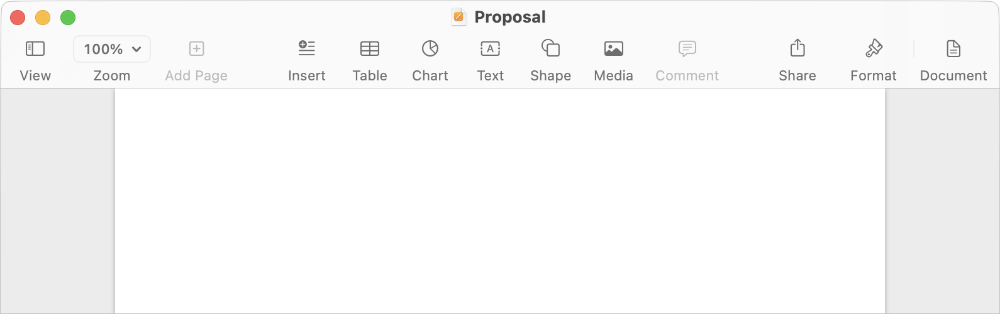

Toolbar Guidelines
The following sections are general guidelines that describe fundamental Toolbar layout and design principles for Mac applications. Following these guidelines will help you create functional and aesthetically pleasing toolbars that are easy for Mac users to understand and use.
This document will reference a hypothetical Email application to illustrate key points in designing a Toolbar. It will heavily reference classes, structs, and properties in NSToolbar and NSTitlebarAccessoryViewController.
Table of Contents
- Window Toolbars
- Designing a Toolbar
- Capturing The User's Mental Model
- Global and User Interface Items
- Sidebar (Source List) Toolbar
- Inspector Sidebar Toolbar
- Titles and Subtitles
- Overflow and Priority
- Centered Items
- Multiple Columns
- Styles
- Bottom Bars
- Accessory Bars
- Special Items
- UI References
Window Toolbars
Toolbars give users immediate access to the most frequently used commands. Any item in the toolbar should also be available as a menu command. However, the opposite does not apply – the application does not need a toolbar item for every menu command.
Items in the toolbar are often commands that are global to the application but can also be contextual. Depending on what the First Responder is, items in the toolbar should disable or enable so that only applicable actions can be taken.
Designing a Toolbar
To help you decide what items to include in a toolbar, consider the user’s mental model of your application's main task/s. Remember that toolbars have limited space, so it is important to only include frequently used actions — especially the default set. Using the user’s mental model, identify the most useful features and commands.
Start by identifying logical groupings and rankings of the items you have chosen for the toolbar. Items and groups of items that need the highest visibility should go towards the left of the toolbar. This sorting should also apply to items within a group of related items.
Another successful arrangement is to place items according to importance, significance, or place in an object hierarchy.
Capturing The User's Mental Model
In our hypothetical Email client application, imagine what a user might do in the application — sequentially. Perhaps they may open the application and click the Get Email button to refresh their Inbox. The may also jump right into writing a new email message. These two options are grouped and placed towards the left side of the toolbar.
The second most logical thing they might do is to either reply to a message or forward a message. This grouping comes next with each item also logically ranked within the group.
The next group would be organizational. This includes options to Archive, Delete, or Junk a message. These options are third in the list because let's face it, a good number of folks mostly just leave all Email in the Inbox.
Finally, the last group would be additional actions a user may perform on a selected Email (or Emails). These two are options to move a message to another inbox (folder) or flag it with a specific color.
In this case, notice how we've come up with a mental model of how a user may use any Email application and sorted our items and groups from most to least used. This is a good start.
Keep in mind that this is the default set of items and arrangement provided by the application. The application could have more items the user can add. Users can even remove items they don't use often or at all — such as Flag or Reply All. Users will always have the ability to restore to the default items set.
A Toolbar's Customization View.
Global and User Interface Items
In some cases, the application may also provide items that aren't part of the user's mental model for the tasks your application provides. For example, items like a global Search or a Share menu can apply to any application. In this hypothetical application, the Search item allows the user to search against all email content and metadata in all mailboxes.
As for Interface items, this example shows toggle buttons on both ends for the app window's sidebars. The leading toggle will show/hide the Sidebar (Source List). The trailing toggle will show/hide the Inspector. Because the sidebar and inspector push other toolbar items inward, these toggles must be anchored to their respective ends and should not move.
Note: Global Search, Share, and the Inspector toggle items should always be the trailing most items. We've established that the Inspector toggle should always be the trailing-most item. This should be followed by the Share item. This is because these two do not expand and can remain anchored. The Global Search item is arranged next since it expands; when clicked, it transforms into a Search Field.
Global and UI Items in a Toolbar.
Sidebar (Source List) Toolbar
In the following illustration, the sidebar is expanded. All but the Sidebar toggle item are pushed inward to make room for the full-height sidebar. Anchoring the Sidebar toggle item allows the user to show/hide the sidebar without having to chase a moving target. Developers often don't account for this and design the toolbar so that the Sidebar toggle is always moving in or out – creating a moving target.
Window with the Sidebar Expanded.
Items in the toolbar portion for the sidebar should only consist of the sidebar toggle button, global items, or items that only persist to the content directly below it (sidebar content).
The toolbar portion for the sidebar should have no more than two items. Since sidebars are now full-height, it is possible that making the sidebar too narrow, it will move some items into an overflow menu. Another option may be to give your sidebar a minimum width to allow for sidebar toolbar items to always show without being moved into an overflow menu.
The best recommendation would be to only have the Sidebar toggle in the toolbar and any additional items that pertain only to sidebar content be down in a Bottom Bar.
For a complete guide on Sidebars, see Sidebar Guidelines.
Developer Note
To get the Sidebar Toggle button and all of its setup for free, use the .toggleSidebar identifier. AppKit will not only setup the button with the correct icon, titles, and localization, it will also call the correct functions to toggle your application's sidebar.
To allow items to the left of the sidebar divider, use the .sidebarTrackingSeparator identifier. When implementing the default item identifiers delegate, provide both .toggleSidebar and .sidebarTrackingSeparator in the appropriate order.
Inspector Sidebar Toolbar
In the following illustration, the Inspector sidebar is expanded. All but the Inspector toggle and Share items are pushed inward to make room for the full-height Inspector. Anchoring the Inspector toggle item allows the user to show/hide the inspector without having to chase a moving target. Developers often don't account for this and design the toolbar so that the Inspector toggle is always moving in or out – creating a moving target.
Window with Inspector Sidebar Expanded.
Items in the toolbar portion for the Inspector sidebar should only consist of the Inspector sidebar toggle button or global items with the exception of Search. Remember that Search bar items expand to make room for a Search field.
Developer Note
To get the Inspector Sidebar Toggle button and all of its setup for free, use the .toggleInspector identifier. AppKit will not only setup the button with the correct icon, titles, and localization, it will also call the correct functions to toggle your application's Inspector.
To allow items to the right of the Inspector sidebar divider, use the .inspectorTrackingSeparator identifier. When implementing the default item identifiers delegate, provide both .toggleInspector and .inspectorTrackingSeparator in the appropriate order.
The tracking separators allow developers and users to place toolbar items on the outer sides of the separators Otherwise, toolbar items couldn't be in the Sidebar or Inspector portions when either are expanded.
Other out-of-the-box toolbar items include:
NSSharingServicePickerToolbarItem: Includes automatic setup and delegate functions for a Share button.
NSSearchToolbarItem: Includes automatic setup and delegate functions for Search functionality.
NSMenuToolbarItem: Includes automatic setup and properties for a drop-down menu.
Titles and Subtitles
Titles and/or Subtitles are optional when creating a Toolbar. Do not use the title to display the application's name. The title, for example, can be used to display the name of the section of the app the user is in. The subtitle can be used to display additional context. In our hypothetical Email app, the title displays the name of the selected Mailbox and the subtitle displays the number of messages in that mailbox.
In order to make room for these titles, the Toolbar will push content towards the right as much as possible. This reinforces that toolbars should only have the most important items for the user.
Overflow and Priority
If a window is resized and the toolbar becomes too narrow to fit all its content, items are moved to an overflow menu. There are two rules that are followed:
- Items with lower priority are hidden first, no matter where they are in the toolbar
- Remaining items are then hidden from right to left
A developer programmatically assigns visibility priority to items and cannot be changed by the user. In our hypothetical Email application, it would be safe to assume that items like Get Email and Compose would have a much higher priority than others like Move or Flag.
Once we’re down to just having the highest visibility items only, the right-most items will be moved into the overflow menu as the window continues to narrow.
Toolbar with an overflow menu.
Developer Note: Review the visibilityPriority property on NSToolbarItem for more details.
Centered Items
Toolbars have a property to designate which items should always be centered. This item has priority to always be fully centered and should be reserved for special items.
In this hypothetical Email example app, there's a segmented/picker control that allows the user to navigate between major parts of the application: Email, Calendar, and Contacts. Because navigation is so important, this item is marked as the centered item for the toolbar.
Examples of first-party apps that center items in their toolbar would be Safari's Address Bar, Apple Music's Now Playing Track view, Photo's view picker.
Developer Note: Use the centeredItemIdentifiers property on NSToolbar with the identifiers of the items you want centered; in this case, the segmented control shown below.
Toolbar Item Group Expanded.
Developer Note: Using NSToolbarItemGroup, you can achieve this control that appears like a Segmented Control if space allows and collapses into a picker when space is constrained.
Toolbar Item Group Collapsed.
Multiple Columns
If the application uses multiple columns where none of them are an Inspector sidebar, the same rules apply, however, the items above each column must continue to apply globally to the application or to the content view directly below it.
In the example below, the first content column would be a list of Email messages for a selected mailbox. The only two items in its toolbar are Get Email and Compose. These are the only two items that apply for the content below it.
The second content column would display a selected Email message. The items in that portion of the toolbar are items that only apply to that selected Email. Global items could be placed here as well, like Search.
Toolbar with a Title
Having a title allows for more context, such as displaying the name of the currently selected mailbox (folder) and the number of Email messages in that mailbox. However, it does cut into your already space limited space toolbar portion for items. Items will be pushed towards the right as much as possible.
Toolbar without a Title
Having no title in the toolbar allows for more space and show items or even add additional items.
Resizing a content column will impact the spacing for the items in that portion of the toolbar. Items that go into an overflow menu will now be impacted by window size, item priorty, and column size.
Developer Note: If your application has multiple content columns (column is neither a Sidebar nor an Inspector) and want a visual separator in the toolbar, implement NSTrackingSeparatorToolbarItem. It requires a reference to the NSSplitViewController's splitView property and which divider index it needs to track.
The NSTrackingSeparatorToolbarItem allows for a visual separator that follows the Split View Controller in the content of the Window. It will move (and shift toolbar items accordingly) as the separator it is tracking is moved by the user.
Styles
Toolbar styles determine the appearance and location of the toolbar in relation to the title bar of the window.
Unified and Unified Compact
The Unified toolbar style is the standard and what most applications should be using. It combines window controls, titles, and items in a single toolbar row. Individual item titles are hidden by default. This is what the hypothetical Email application in this document uses and shown in all screenshots.
Unified toolbar styling should be the default for most Mac applications.
There is an alternative style to this, Unified Compact, which simply makes the entire toolbar shorter.
Expanded
The Expanded toolbar style is what Document-based applications should be using. Window controls and titles are in their own titlebar while toolbar items are in their own row below. Individual item titles are shown by default and are compact.
Standard toolbar styling for Document-based applications.
Preference
The Preference toolbar style is what Settings windows should be using. Window controls and titles are in their own titlebar while toolbar items are in their own row below. Individual item titles are shown by default and the current selection is highlighted.
Standard toolbar styling for Settings windows.
Bottom Bars
A bottom bar is a window-frame area that is below the window body. Bottom bars give users access to controls that directly affect the contents or organization of the window body. If your application has a multi-column body, bottom bars affect the content or organization of its column.
Controls in Bottom Bars are frequently used but somewhat less important than controls in the toolbar. Bottom Bars are typically also non-customizable and will either contain action buttons and/or statuses.
Bottom Bars in a multi-content area application.
As a special case for Sidebars, toolbar items that normally would have gone into the toolbar for the Sidebar section, can be placed in a bottom bar. For our hypothetical Email application, such items would include perhaps an Add Mailbox button and a Show/Hide Status view button. Placing these in a bottom bar ensures that they would never get accidentally hidden from the user by going into an overflow menu.
Bottom Bars in a single content area application.
Developer Note: The built-in Bottom Bar in a Window only applies to the content portion of a multi-column application. It does not extend into Sidebars or Inspector Sidebars. However, these can be achieved manually.
For control metrics and tips on designing for bottom bars, read the Positioning Controls in Bottom Bars section in the Layout Guidelines guide.
Accessory Bars
Accessory Bars can serve as a secondary toolbar and should contain items that are secondary to toolbar items. Accessory Bars should not contain any global controls and should only contain items that affect the selected/displayed content.
Accessory Bars typically span accross the entire window except for Sidebars and Inspector Sidebars. However, if your application consists of a Sidebar followed by two content view columns, then the Accessory Bar will span across both content view columns without any separators.
The following is an example of an Accessory Bar used to perform a search within a specific, selected Email message in our hypothetical Email application. The Search in the main Toolbar is a global Search to search for a query for all Email across all mailboxes (folders). Note that the Accessory Bar spans across all content columns.
Developer Note: For more information, reference the NSTitlebarAccessoryViewController documentation.
Accessory Bar in a multi-content application. Expands across all content areas.
Accessory Bars do not span across into Sidebars or Inspector Sidebars.
Accessory Bar in a single-content application. Does not expand into sidebars.
Another example of an Accessory Bar in our hypothetical Email application is when composing a new Email message. It can contain all of the formatting controls for the body of the Email.
Accessory Bars can house formatting tools for document applications.
Special Items
The following are built-in Toolbar Items and Identifiers developers can use to achieve results like those described in this article.
- .cloudSharing: A toolbar item identifier that tells your app to display the iCloud sharing interface.
- .writingToolsItemIdentifier: A toolbar item identifier that tells your app to display the Apple Intelligence Writing Tools UI.
- .toggleSidebar: A toolbar item identifier that toggle's your app's sidebar.
- .sidebarTrackingSeparator: A toolbar item identifier that visually aligns itself with the sidebar divider of a vertical split view in the same window.
- toggleInspector: A toolbar item that toggle's your app's Inspector sidebar.
- inspectorTrackingSeparator: A toolbar item identifier that visually aligns itself with the Inspector sidebar divider of a vertical split view in the same window.
- NSSharingServicePickerToolbarItem: Item displays the macOS share sheet. Use this item to share the selected or focal content from the current window.
- NSSearchToolbarItem: Item displays a Search button and will expand to a Search field when there is enough space or when clicked by the user.
- NSMenuToolbarItem: Item that can display a menu. It can be configured so single click can invoke an action while the disclosure indicator displays the menu.
- NSToolbarItemGroup: A collection of items displayed as one item.
- NSTrackingSeparatorToolbarItem: A toolbar item separator that aligns with the vertical split view in the same window.
Toolbar displaying some of the built-in toolbar items in AppKit.
UI References
The following screenshots are for reference only as described in various section of this article.
Window displaying the toolbar styles between sidebar, content area, and the inspector.
Window displaying the toolbar styles between sidebar and multiple content areas.
I enjoy creating content that helps other Mac developers ship their best possible work. If you find this content useful and if you're able to, consider perhaps buying me a coffee. But if not, no worries! I'd appreciate you at least sharing this document with your fellow Mac developers posting it on social media! Thank you!
Have Suggestions?
Reach out via Mastodon if you have suggestions that would improve this article.
Mastodon